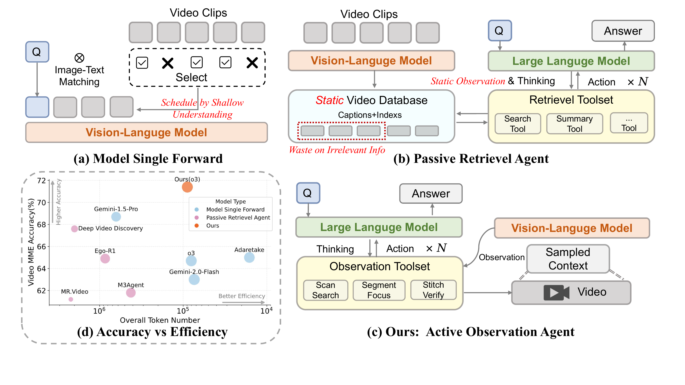
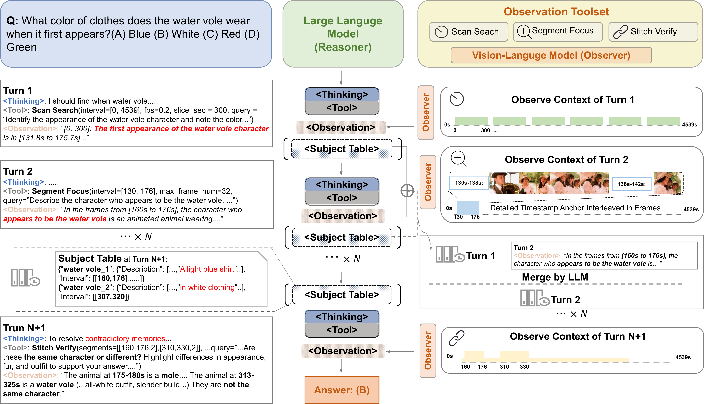
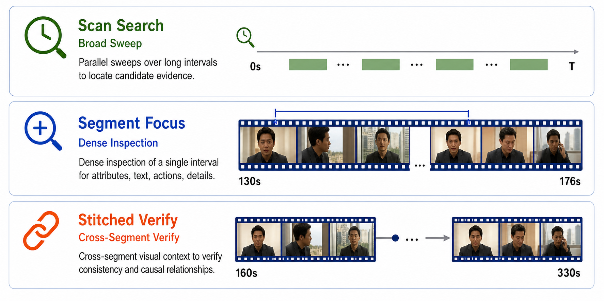

CVPR 2026 Highlight
LensWalk: Agentic Video Understanding by Planning How You See in Videos
Institute of Computing Technology, CAS · Peng Cheng Laboratory · Hunan University · UCAS

Abstract
Reasoning controls perception.
Long videos are dense, temporal, and hard to compress into one fixed context. LensWalk frames video QA as a multi-turn reason-plan-observe loop: an LLM reasoner chooses temporal scope and sampling density, calls VLM-based observation tools, and uses timestamped evidence to refine later plans. Without model fine-tuning, LensWalk provides plug-and-play gains on long-video and video-reasoning benchmarks.
Method
A compact tool set for active observation
The observation tool set exposes three complementary ways of seeing: broad parallel scans, dense local focus, and stitched cross-moment verification. Timestamp anchors and subject memory keep the multi-turn evidence grounded.


Interactive Tool Dashboard
Observer messages generated by each tool
The dashboard renders the user messages and video subsegments passed to the VLM observer for scan, focus, and stitch actions.
scan_observer
Scan Search
NASA demo · 01:58
00:00
00:30
01:00
01:30
01:58
Citation
BibTeX
@inproceedings{li2026lenswalk,
title = {LensWalk: Agentic Video Understanding by Planning How You See in Videos},
author = {Li, Keliang and Li, Yansong and Shen, Hongze and Liu, Mengdi and Chang, Hong and Shan, Shiguang},
booktitle = {Proceedings of the IEEE/CVF Conference on Computer Vision and Pattern Recognition (CVPR)},
year = {2026}
}